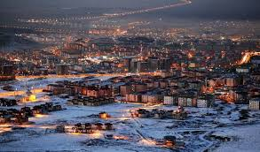
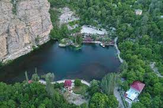

< Erzurum Türkiye'nin 81 ilinden biridir.Erzurum Ovası'nın güneydoğu kenarında, bu ova ile Palandöken dağının temas
sahasında kurulmuş olan Erzurum şehri, 758.279 nüfusu ile Doğu Anadolu Bölgesi'nin en büyük üçüncü ilidir.
Denizden yüksekliği yaklaşık 1900 m olan Erzurum, tarihin ilk dönemlerinden beri yerleşim yeridir. Şehir, tarihî
eserleri ve kış sporları tesisleriyle de tanınır. Yüzölçümü bakımından Türkiye'nin en büyük dördüncü ili olan Erzurum'da,
temel geçim kaynağı tarım ve hayvancılık olup şehir son yıllarda kış turizmiyle de öne çıkmaktadır. Soğuk iklimi sebebiyle
sanayisi gelişmemiştir. 25.005 km² yüzölçümüne sahip il arazisinin %15,17'si tarımsal amaçlı olarak kullanılabilir konumdadır.

UZUNDERE
İlçe 3000 yıllık bir tarihi geçmişe sahip olup, Uzundere ilçesi tarih içerisinde Hititler, İskitler, Sakalar,
Persler,Doğu Roma, Sasaniler, Bagratlı Krallığı, Vaspuragan Krallığı ve Osmanlı Devleti gibi devletlerin hakimiyeti
altında kalmıştır. Kanuni Sultan Süleyman döneminde Osmanlı Devleti hakimiyetine girmiştir. Uzundere, Erzurum ilinin
kuzey kesiminde yer almaktadır. Tarihte Roma, Ermeni ve Gürcü medeniyetlerinin hakimiyeti altına giren ilçe 1458 yılında
Akkoyunlu devletinin ve 1549 yılında tamamen Osmanlı hakimiyetine geçmiştir.
Uzundere İlçesi Mart 2016 yılında sakin kent unvanına sahip olmuştur. Cittaslow hareketi ile 1999’da İtalya’da başlayan
sakin kent hareketi, toplumların sahip olduğu geleneksel değerlerin küresel güçler tarafından standartlaştırılmasına ve çevresel
değerlerin kaybolmasına tepki olarak doğmuştur.

PALANDÖKEN
70 kilometre uzunluğunda ve 25 kilometre genişliğinde bir alanı kaplayan Palandöken Dağları, 1993 yılında Kış Turizm Merkezi
ilan edilmiştir. Bu merkez içerisinde; Erzurum (Hınıs) Boğazı, Konaklı ve Gez Yaylası'ndan oluşan 3 adet kayak merkezi
bulunmaktadır. Erzurum Boğazı, aynı zamanda Palandöken Kayak Merkezi adıyla anılmaktadır. Palandöken Kayak Merkezin'de
slalom ve büyük slalom yarışmaları için Uluslararası Kayak Federasyonu (FIS) tarafından tescilli iki pist bulunmaktadır.
Erzurum'un güneyinde yer alan 3 bin 176 metre yüksekliğindeki Palandöken, 5 ay boyunca kayak yapmaya elverişli yapısı,
kar kalitesi ve uzun pistleri ile dünyanın en önemli kayak merkezlerinden biridir. 2011 yılında 25. Dünya Üniversiteler
Kış Oyunları'na ev sahipliği yapan Erzurum, Türkiye ve dünya kış turizminin yeni cazibe merkezlerinden biri olmuştur.
Kış olimpiyatlarının dahi düzenlenmesine imkân tanıyan Palandöken'de pistler dünyanın en uzun ve en dik pistleri arasında
yer almaktadır. Palandöken, New York Times Gazetesi tarafından belirlenen dünyadaki 41 kayak merkezi arasında 18'nci sırada
gösterilmiştir.